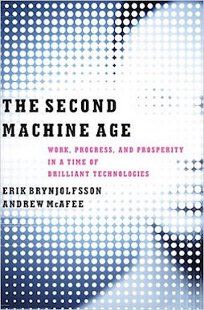
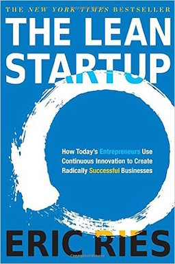
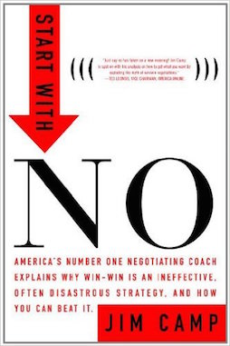

Reading
Everyone has a collection of blog posts and books that helped them develop certain skills or change how they think about the world.
Below are the books and articles that helped develop my thinking on businesses, culture, and how to do it right.
My goal is for this list to be challenged and change over time, that's why I run a non-fiction book club with some friends in London. If you want to join us just email me.
Books
The Second Machine Age
{kind=link}
Touching on how the technology revolution we work in affects everything from traditional business growth strategies, to inequality, to how automation and AI will impact jobs. This is the book I have recommend most frequently since reading it.
Not For Bread Alone

Written by the founder of Panasonic, I was inspired to read this book by after watching Yancey Strickler's talk at Web Summit 2015. The book has some great principles for management, product process and the balance of spiritual va material wealth.
The Lean Startup
{kind=link}
Published just as I joined Songkick, it unsurprisingly became required reading for all of us and I still use principles from it every day.
Start With No
{kind=link}
I picked this book up when I took over responsibility for Songkick's Product Partnerships. I was suddenly tasked with negotiating deals with companies such as Shazam and Pandora. It was not only useful for that but I found a lot of the principles are similar to those of product development.
Blog Posts
Paul Graham: Wealth
“There are a lot of ways to get rich, and this essay is about only one of them. This essay is about how to make money by creating wealth and getting paid for it."
Mark Leslie: The Arc of Company Life – and How to Prolong It
“No matter what excuses are made or exceptions declared, it’s the rule that companies at one time viewed as clear winners will ultimately experience the threat of decline and extinction at the end of the Arc of Life. No organization is immune to this fate. Only a select few have demonstrated their ability to undertake enough transformative shifts to extend their life decades beyond their competition.”
Ketan Jhaveri: Elon Musk: The Role of Analogy and Reasoning From First Principles in Disruptive Entrepreneurship
"'First principles' is a physics way of looking at the world…what that really means is that you boil things down to the most fundamental truths…and then reason up from there…that takes a lot more mental energy…"
Nilofer Merchant: Innovation Isn’t Tied to Size, but to Operating Rules
"The key for every firm — regardless of size — is to figure out how to consistently create value in a demanding, ever-changing market. That is hard no matter what size you are, no matter what industry you’re in."
Justin Rosenstein: Do Great Things
"We have a greater capacity to change the world today than the kings and presidents of just 50 years ago."
Yancey Strickler: Resist & Thrive
“It’s not about conquering the world, it’s about doing the right thing. When done correctly, this creates the ultimate product-market fit."
Travis Kalanick at Big Omaha 2011
"Whatever it is you’re afraid of go after it. Fear just slows you down."
Dan Rogers: Be Aggressive or Fail
"Good luck getting out of the forest."


Drop
Me an email.